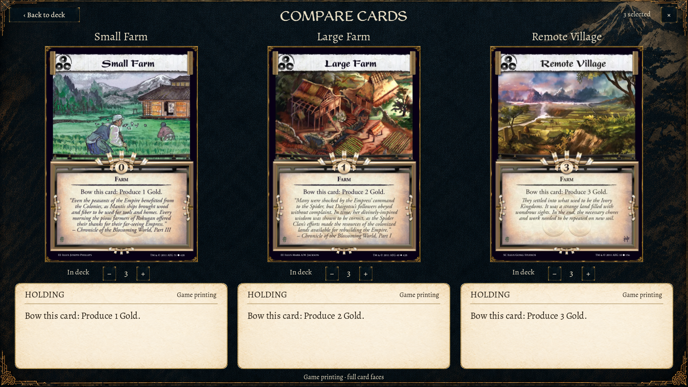
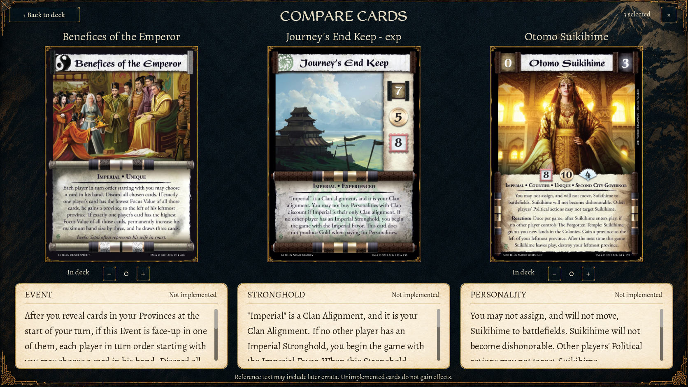
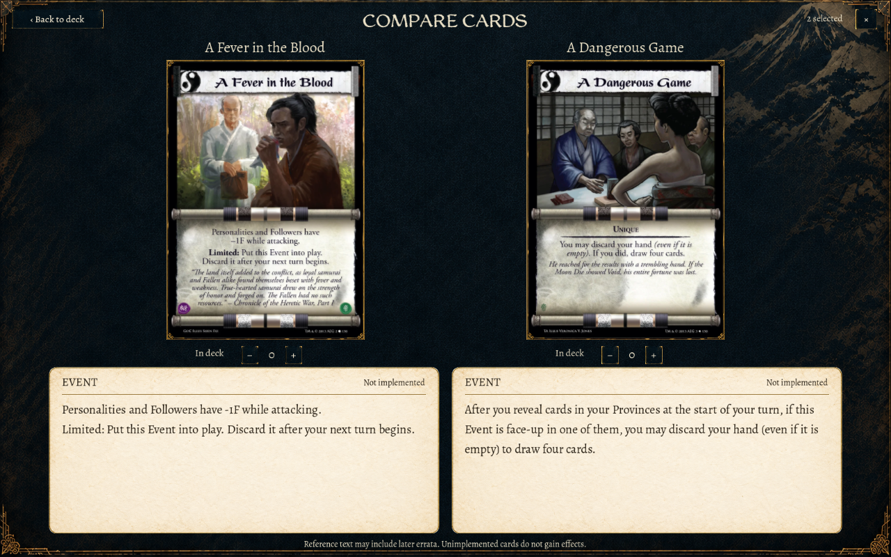
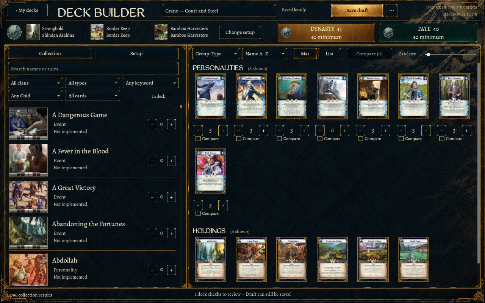
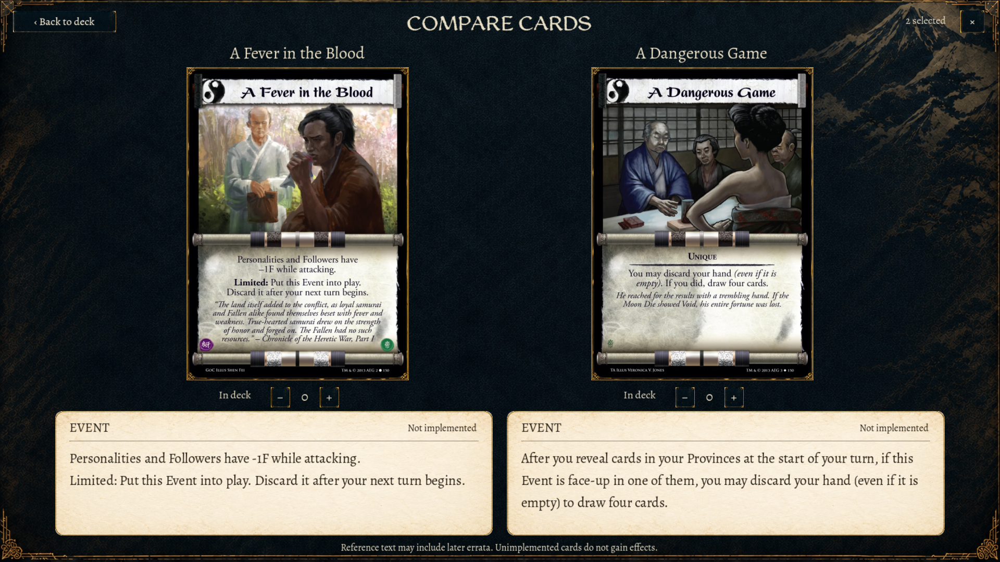
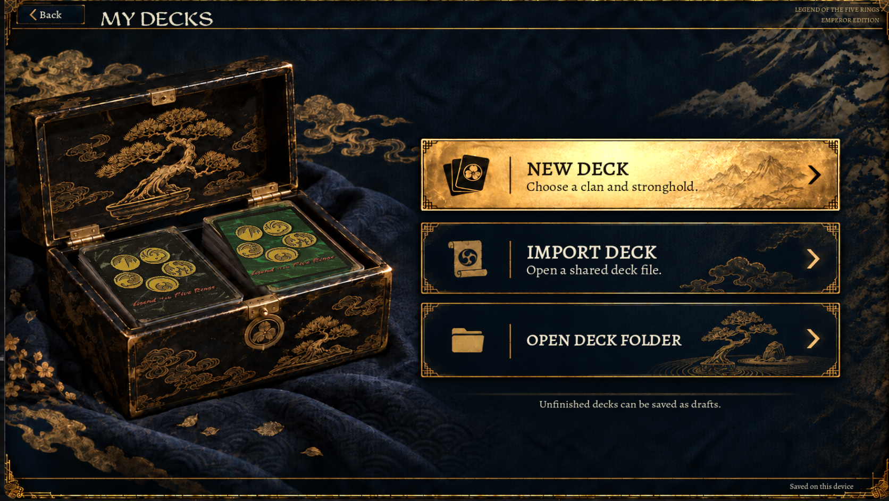
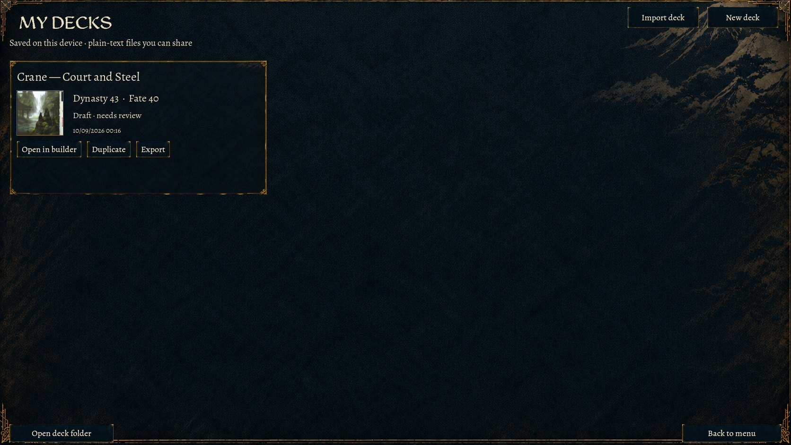
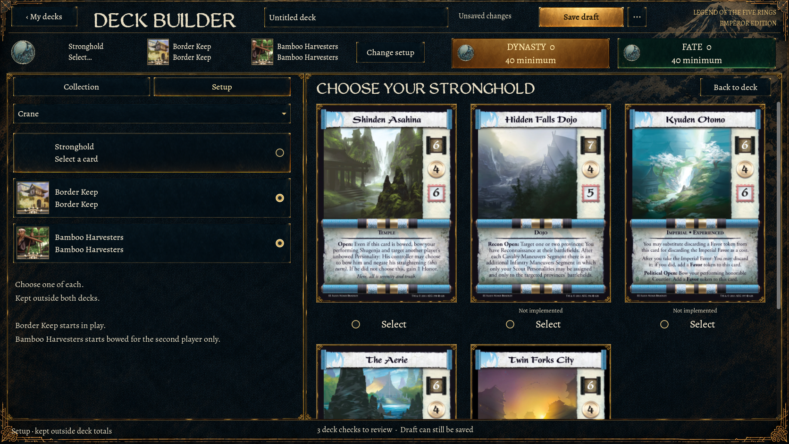

Native Mac captures of the implemented UI. Original card scans and WeatheredQuill headings are preserved; generated card text and illustrative artwork are not used as game data. The three landing actions are live buttons. Save/load behavior is unchanged.
Native scenarios
Passed: setup replacement, quantity controls, comparison selection, long rules scrolling, save/reopen, invalid import recovery, unsaved navigation, external overwrite decisions, responsive layout and actual main-menu entry. Test files were isolated from player storage.
Compare

Compare Long Rules

Small Compare

Small Window

Wide Compare

Landing Focus

Saved Decks

Setup
